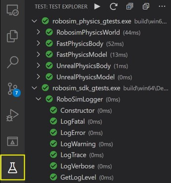

Build From Source as a Developer¶
For many usage scenarios, Using Pre-built Binary Environments or Using Project AirSim Plugin in Custom Environments is enough to get a simulation up and running. The main development would then be done by setting up the Config JSON Settings and using the Project AirSim Client and APIs to drive the simulation for the particular usage application.
If deeper customization or extending new features is needed, building the Project AirSim framework from source can be done through the process described below.
Project AirSim architecture overview¶
There are 3 layers to the Project AirSim development process:
Project AirSim Sim Libs -
projectairsim/root CMake projectProject AirSim Plugin -
projectairsim/unreal/Blocksscript-generated project requiring Unreal EngineProject AirSim Client Library -
projectairsim/client/pythonPython client files
<TODO Add high-level architecture diagram here.>
Key parts of the Project AirSim folder structure:
projectairsim
└─ ...
└─ client (Client files)
│ └─ python (Python client files)
│ └─ projectairsim (Project AirSim Client Library)
│ └─ sim-config (Project AirSim config JSONC files)
└─ multirotor_api (Project AirSim component for multirotor controllers)
└─ physics (Project AirSim component for physics)
└─ core_sim (Project AirSim core sim)
└─ unreal
└─ Blocks (Blocks Unreal environment)
└─ Plugins
└─ ProjectAirSim (Project AirSim Plugin)
└─ Drone (Drone content-only plugin)
Initial developer setup¶
Project AirSim can be developed using Windows 10/Server 2019 or Ubuntu 20.04 Linux. See System Specifications for more details.
For details on getting your dev environment set up, choose your platform:
Developing Project AirSim Sim Libs¶
Choose your development tool:
Note: Project AirSim sim libs uses CMake which saves build configuration information in a cache, so if you switch tools between using command line, VS Code, or Visual Studio 2019 to drive the CMake project in the same folder, you should clear the cache by running build clean so the next tool can reset the configuration and build again properly.
Command Line (Windows/Linux)¶
On Windows, run the build.cmd script using the x64 Native Tools Command Prompt for VS 2019.
Unreal Engine 5.2.x requires a specific MSVC compiler version and will fail with newer versions. Load the correct toolset into your command prompt session:
"C:\Program Files\Microsoft Visual Studio\2022\Community\VC\Auxiliary\Build\vcvars64.bat" -vcvars_ver=14.37.32822
Note: This path assumes a default VS 2022 Community installation. Adjust the path if yours is different.
On Linux, run the build.sh shell script.
build{.cmd|.sh} {target from below}
all = Clean + Build + Test + Package everything
clean = Clean sim libs + Blocks build files
simlibs_debug = Build + Package sim libs for Debug
simlibs_release = Build + Package sim libs for Release
test_simlibs_debug = Test sim libs for Debug
test_simlibs_release = Test sim libs for Release
blocks_debuggame = Build Plugin + Blocks for DebugGame (uses Debug sim libs)
blocks_development = Build Plugin + Blocks for Development (uses Release sim libs)
package_plugin = Package Project AirSim UE Plugin for Debug + Release
package_blocks_debuggame = Package stand-alone Blocks environment executable for DebugGame
package_blocks_development = Package stand-alone Blocks environment executable for Development
The sim lib components and unit test executables are built in the projectairsim/build/ folder using CMake, and are automatically copied to the Unreal Blocks environment folder to be ready for building the plugin.
The Plugin components are built in the projectairsim/unreal/Blocks/ folder using the Unreal Engine’s build system.
The packaged outputs (sim lib components, UE Plugin, Blocks stand-alone executable) are copied to the projectairsim/packages/ folder, where they can be picked up for external uses.
The Python client files are in the projectairsim/client/python/ folder, with the Project AirSim Client Library in the projectairsim/client/python/projectairsim sub-folder.
VS Code (Windows/Linux)¶
Although the sim libs CMake project can be opened as a folder in VS Code independently of the Blocks Unreal environment project, it is more convenient to develop the sim libs together with the UE Plugin in the Blocks environment as a multi-root workspace project which has access to all levels of source during debugging.
To develop using a multi-root workspace project file, follow the steps below:
Generate and open the VS Code
Blocks.code-workspaceproject fileRun the following script:
projectairsim/unreal/Blocks/blocks_genprojfiles_vscode{.bat|.sh}
Since some parts of the sim libs haven’t been built yet, there may be some warning outputs in yellow text, but it is ok to ignore them.
After it completes, use VS Code to open the
projectairsim/unreal/Blocks/Blocks.code-workspacethat was generated.Choose CMake Kit toolchain for building sim libs
After the workspace opens and the CMake extension loads, various sections should become active in the bottom toolbar:
Select the CMake Kit section and choose
Visual Studio Enterprise 2019 Release - amd64for Windows orClang 10.0.0for Linux. If no kits are shown, selectScan for kitsto refresh the detected toolchains.Example of CMake Kit selection for Windows:
Choose CMake build configuration for sim libs
Select the CMake Config section and choose the desired sim libs build configuration for your platform:
When you select a build config, it will trigger CMake to run its configuration step to generate the cache for setting up the build. The first time this is run for each config, it may take a few minutes because it fetches the sim libs’ dependencies from their repos.
Choose Intellisense configuration
The active Intellisense configuration is shown at the right side of the bottom toolbar:
The Intellisense configuration will switch based on which part of the multi-root workspace the last active source file is from.
When a sim lib source file is active, you can click on the Intellisense Config button to select the appropriate config for your platform (defined in
projectairsim/.vscode/c_cpp_properties.json):When a Blocks Plugin source file is active, it will use Unreal’s automatically generated configuration called
UnrealEngine(defined inprojectairsim/unreal/Blocks/.vscode/c_cpp_properties.json).Caution: If you modify the
UnrealEnginesettings, it will get overwritten whenever theblocks_genprojfiles_...scripts are run to regenerate the workspace.Build sim libs using the CMake
[all]targetClick the Cmake Build button in the bottom toolbar to trigger the CMake build of the sim libs for the selected configuration. You should see the results of the build in the
Outputconsole’sCMake/Buildsection.
Note: There is no toolbar button to trigger a
cleanbuild, so if something goes wrong, you can use the command line build scripts to runbuild clean, and then retry configuring/building the CMake project.Run CTest unit tests for sim libs
After the sim libs have been built, a CTest Button should appear in the bottom toolbar. Clicking this CTest button will trigger CTest to run the unit test executables for the current build configuration.
You can also run and debug the unit tests from the Test Explorer sidebar section:

Launch the main debugger with the sim libs’ matching Unreal Editor configuration
Once the sim libs have been built, you can switch to the Run Debugger sidebar section and choose a debug target from the drop-down menu:
The targets shown are automatically generated in the
launch.jsonfile by Unreal when theblocks_genprojfiles_...script generated the workspace. However, some of the targets are not valid.The valid targets for primary development are:
Blocks (DebugGame)
Blocks (Development)
BlocksEditor (DebugGame)
BlocksEditor (Development)
The
BlocksEditortargets can be launched as long as the corresponding sim libs configuration has been built (DebugGamerequiresDebugsim libs, andDevelopmentrequiresReleasesim libs).The stand-alone game
Blockstargets can’t be launched until the game content has been cooked, as described in the next optional step.To start, just click the green Run button to launch the
BlocksEditortarget and after building the Plugin and Blocks environement, the Unreal Editor should load up ready to Play and debug.When you click on the Play button in the Editor toolbar, a drone should spawn and the simulation has started running, ready for a client to connect to it.
(Optional) Cook stand-alone game content
One way to cook the game content is to first launch the Editor target and then in the Editor GUI select
File -> Cook Content for {Windows|Linux}.Another way to cook the game content is to use the command line build script to package the Blocks stand-alone game:
build.{cmd|sh} package_blocks_{debuggame|development}
It can be cooked with either DebugGame or Development configurations, as the cooked content is the same for both.
(Optional) Launch the main debugger with the sim libs’ matching stand-alone game configuration
Once the game content has been cooked, you can use the stand-alone game
Blockstargets to launch the VS Code debugger.Sometimes this is faster to use than the
BlocksEditortargets for development iteration because it doesn’t load all of the Editor overhead on each launch. However, the Editor can be convenient for repeatedly starting/stopping play of the simulation while debugging the same build.See Developing Project AirSim Client Library for the next steps of interacting with the Blocks simulation through the Python client.
Visual Studio 2019 (Windows only)¶
Due to Project AirSim’s multi-layer project architecture that combines CMake for the sim libs and Unreal’s build system for the Plugin, there are some quirks to using Visual Studio 2019 to manage both systems.
One option is to simply use the command line build scripts to manage the CMake side for sim libs, and only use the Visual Studio solution to drive the Unreal Plugin and environment.
However, it is possible to use Visual Studio to do both in a single project by following the steps below.
Generate and open the Visual Studio 2019
Blocks.slnsolution project fileRun the following script:
projectairsim/unreal/Blocks/blocks_genprojfiles_vs2019.bat
Since some parts of the sim libs haven’t been built yet, there may be some warning outputs in yellow text, but it is ok to ignore them.
After it completes, use Visual Studio 2019 to open the
projectairsim/unreal/Blocks/Blocks.slnthat was generated.Switch to the Solution Explorer’s folder tree view
The solution will load with everything set up for launching the Blocks Unreal environment, but first the sim libs needs to be built with CMake.
To switch to the CMake side of the project, choose the Solution Explorer’s
Folder Viewfor Visual Studio to detect the CMake files in the rootprojectairsimfolder.Wait for CMake root project to be detected
After a minute or two, the CMake project should be automatically detected and the
Outputconsole will start to show CMake running its configure step for the default build configuration. The build configuration drop-down menu should also show up in the top toolbar for switching the active config from the defaultDebugconfig.Switch to CMake Targets view and choose CMake build configuration for sim libs
The Solution Explorer should now have a
CMake Targets Viewoption in addition to theFolder ViewandBlocks.slnsolution.Switch to the
CMake Targets Viewand choose the desired build configuration from the toolbar drop-down menu. CMake will re-configure when the build configuration is changed. After CMake’s configure step is finished, theCMake Targets Viewwill become a list of the CMake project targets that are available to build.Build sim libs with CMake
In the
CMake Targets View, right-click on theProjectAirSimSimLibs Projectand selectBuild All. TheOutputconsole should start to display the build steps as all of the sim libs components are built.Run CTest unit tests for sim libs
After the build completes, you can run the sim lib unit tests by CTest by right-clicking on the
ProjectAirSimSimLibs Projectand selectingRun Tests. The test results will be displayed in theOutputconsole.You can also run and debug the unit tests from Visual Studio’s Test Explorer section that can be activated from the
Testmenu.Switch to Blocks Solution view to launch debugger with matching Unreal configuration
Once the sim libs have been built, you can switch to the Solution Explorer’s
Blocks.slnsolution view and choose a debug target from the drop-down menu:The
DebugGame EditorandDevelopment Editortargets can be launched as long as the corresponding sim libs configuration has been built (DebugGamerequiresDebugsim libs, andDevelopmentrequiresReleasesim libs).The stand-alone game
DebugGameandDevelopmenttargets can’t be launched until the game content has been cooked, as described in the next optional step.Project AirSim only supports the
Win64option, which should be selected by default.To start, just click the green Local Windows Debugger button to launch the
DebugGame EditororDevelopment Editortarget and after building the Plugin and Blocks environement, the Unreal Editor should load up ready to Play and debug.When you click on the Play button in the Editor toolbar, a drone should spawn and the simulation has started running, ready for a client to connect to it.
(Optional) Cook stand-alone game content
One way to cook the game content is to first launch the Editor target and then in the Editor GUI select
File -> Cook Content for Windows.Another way to cook the game content is to use the command line build script to package the Blocks stand-alone game:
build package_blocks_{debuggame|development}
It can be cooked with either DebugGame or Development configurations, as the cooked content is the same for both.
(Optional) Launch the main debugger with the sim libs’ matching stand-alone game configuration
Once the game content has been cooked, you can use the stand-alone game
DebugGameandDevelopmenttargets to launch the Visual Studio debugger.Sometimes this is faster to use than the
...Editortargets for development iteration because it doesn’t load all of the Editor overhead on each launch. However, the Editor can be convenient for repeatedly starting/stopping play of the simulation while debugging the same build.See Developing Project AirSim Client Library for the next steps of interacting with the Blocks simulation through the Python client.
Developing with the Project AirSim client library¶
Set up the simulation configuration JSONC files in the
projectairsim/client/sim_configfolder for your purpose.Launch the Blocks simulation and start play.
Switch to
projectairsim/pythondirectory using a command line with an activated Python environment that was set up during the Project AirSim Client Setup.Start executing a client script to load the simulation configured in step 1 and interact with the simulation.
Run example client scripts:¶
Some example scripts are provided to use as reference for building your own script:
Example client script |
Description |
|---|---|
hello_drone.py |
Basic takeoff/landing of a single drone with camera image sensors |
hello_nonphysics_drone.py |
A drone in non-physics “computer vision” mode that can be moved around with keyboard input |
Run Pytest end-end tests:¶
You can run the Python client end-end tests by running Pytest while the simulation is up and running:
pytest -v
Copyright (C) Microsoft Corporation. All rights reserved.